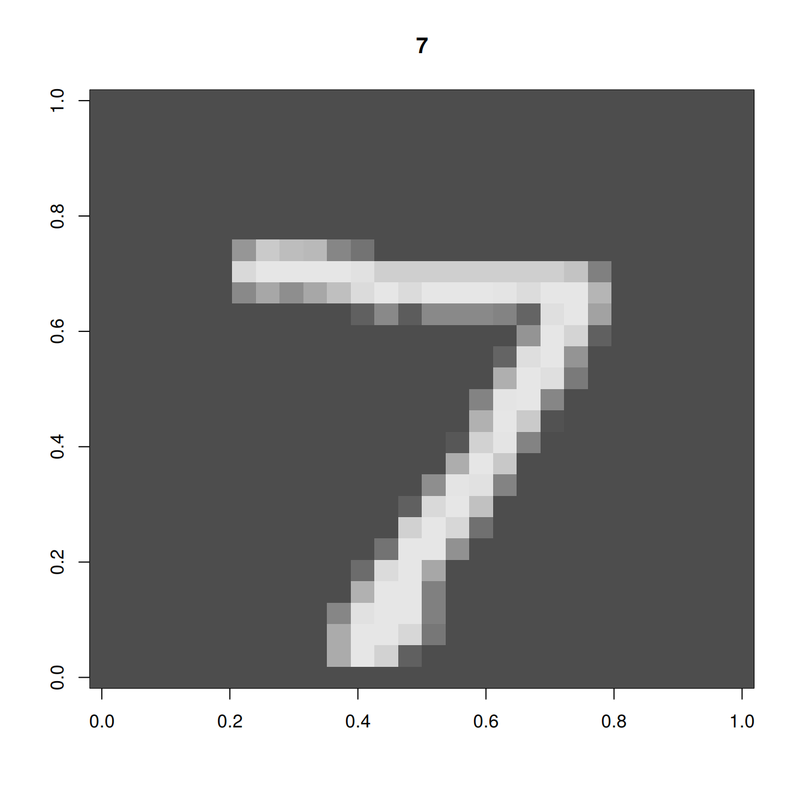
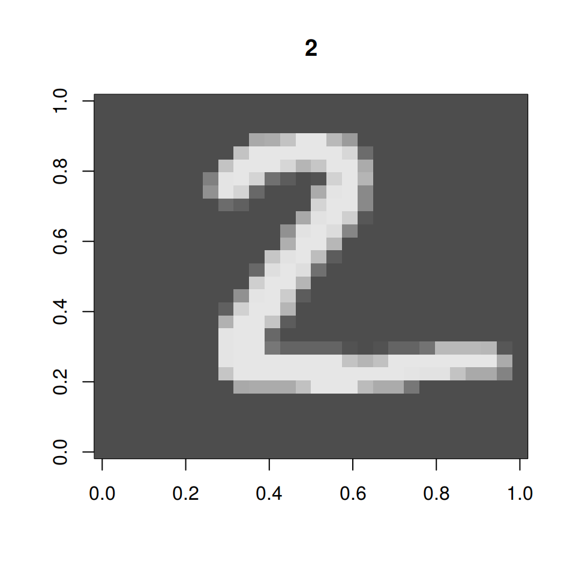

idx_images_minist_digits
Source:vignettes/idx_images_minist_digits.Rmd
idx_images_minist_digits.Rmd# these are the equivalents of import module
nn <- torch$nn
transforms <- torchvision$transforms
dsets <- torchvision$datasets
builtins <- import_builtins()
batch_size_train <- 64LLoad datasets
Load training dataset
# this will save the datasets to the local drive
train_dataset = dsets$MNIST(root=file.path('../inst/raw_data'),
train=TRUE,
transform=transforms$ToTensor(),
download=TRUE)
train_dataset
#> Dataset MNIST
#> Number of datapoints: 60000
#> Root location: ../inst/raw_data
#> Split: Train
builtins$len(train_dataset)
#> [1] 60000
Class and length of train_dataset
# R
class(train_dataset)
#> [1] "torchvision.datasets.mnist.MNIST"
#> [2] "torchvision.datasets.vision.VisionDataset"
#> [3] "torch.utils.data.dataset.Dataset"
#> [4] "python.builtin.object"
length(train_dataset)
#> [1] 2# Python
builtins$type(train_dataset)
#> <class 'torchvision.datasets.mnist.MNIST'>
builtins$len(train_dataset)
#> [1] 60000
reticulate::py_len(train_dataset)
#> [1] 60000Note that both similar commands produce different results
names(train_dataset)
#> [1] "class_to_idx" "classes" "data"
#> [4] "download" "extra_repr" "extract_gzip"
#> [7] "processed_folder" "raw_folder" "root"
#> [10] "target_transform" "targets" "test_data"
#> [13] "test_file" "test_labels" "train"
#> [16] "train_data" "train_labels" "training_file"
#> [19] "transform" "transforms" "urls"reticulate::py_list_attributes(train_dataset)
#> [1] "__add__" "__class__"
#> [3] "__delattr__" "__dict__"
#> [5] "__dir__" "__doc__"
#> [7] "__eq__" "__format__"
#> [9] "__ge__" "__getattribute__"
#> [11] "__getitem__" "__gt__"
#> [13] "__hash__" "__init__"
#> [15] "__init_subclass__" "__le__"
#> [17] "__len__" "__lt__"
#> [19] "__module__" "__ne__"
#> [21] "__new__" "__reduce__"
#> [23] "__reduce_ex__" "__repr__"
#> [25] "__setattr__" "__sizeof__"
#> [27] "__str__" "__subclasshook__"
#> [29] "__weakref__" "_check_exists"
#> [31] "_format_transform_repr" "_repr_indent"
#> [33] "class_to_idx" "classes"
#> [35] "data" "download"
#> [37] "extra_repr" "extract_gzip"
#> [39] "processed_folder" "raw_folder"
#> [41] "root" "target_transform"
#> [43] "targets" "test_data"
#> [45] "test_file" "test_labels"
#> [47] "train" "train_data"
#> [49] "train_labels" "training_file"
#> [51] "transform" "transforms"
#> [53] "urls"# this is not what we are looking for which is torch.Size([1, 28, 28])
d0 <- train_dataset$data[1, 1]
#> Warning in `[.torch.Tensor`(train_dataset$data, 1, 1): Incorrect number of
#> dimensions supplied. The number of supplied arguments, (not counting any
#> NULL, tf$newaxis or np$newaxis) must match thenumber of dimensions in the
#> tensor, unless an all_dims() was supplied (this will produce an error in
#> the future)
class(d0)
#> [1] "torch.Tensor" "torch._C._TensorBase" "python.builtin.object"
d0$size()
#> torch.Size([28])# this is identical to train_dataset.data.size() in Python
train_dataset$data$size()
#> torch.Size([60000, 28, 28])# this is not a dimension we are looking for either
train_dataset$data[2, 1]$size()
#> Warning in `[.torch.Tensor`(train_dataset$data, 2, 1): Incorrect number of
#> dimensions supplied. The number of supplied arguments, (not counting any
#> NULL, tf$newaxis or np$newaxis) must match thenumber of dimensions in the
#> tensor, unless an all_dims() was supplied (this will produce an error in
#> the future)
#> torch.Size([28])# py = import_builtins()
enum_train_dataset <- builtins$enumerate(train_dataset)
class(enum_train_dataset)
#> [1] "python.builtin.iterator" "python.builtin.enumerate"
#> [3] "python.builtin.object"
# enum_train_dataset$`__count__`
reticulate::py_list_attributes(enum_train_dataset)
#> [1] "__class__" "__delattr__" "__dir__"
#> [4] "__doc__" "__eq__" "__format__"
#> [7] "__ge__" "__getattribute__" "__gt__"
#> [10] "__hash__" "__init__" "__init_subclass__"
#> [13] "__iter__" "__le__" "__lt__"
#> [16] "__ne__" "__new__" "__next__"
#> [19] "__reduce__" "__reduce_ex__" "__repr__"
#> [22] "__setattr__" "__sizeof__" "__str__"
#> [25] "__subclasshook__"train_dataset$data$nelement() # total number of elements in the tensor
#> [1] 47040000
train_dataset$data$shape # shape
#> torch.Size([60000, 28, 28])
train_dataset$data$size() # size
#> torch.Size([60000, 28, 28])# get index, label and image
# the pointer will move forward everytime we run the chunk
obj <- reticulate::iter_next(enum_train_dataset)
idx <- obj[[1]] # index number
image <- obj[[2]][[1]]
label <- obj[[2]][[2]]
cat(idx, label, class(label), "\t")
#> 0 5 integer
print(image$size())
#> torch.Size([1, 28, 28])Introspection training dataset
Inspecting a single image
So this is how a single image is represented in numbers. It’s actually a 28 pixel x 28 pixel image which is why you would end up with this 28x28 matrix of numbers.
MNIST image from training dataset
Plot one image
rotate <- function(x) t(apply(x, 2, rev)) #function to rotate the matrix
# read label for digit
label
#> [1] 5
# read tensor for image
img_tensor_2d <- image[1]
#> Warning in `[.torch.Tensor`(image, 1): Incorrect number of dimensions
#> supplied. The number of supplied arguments, (not counting any NULL,
#> tf$newaxis or np$newaxis) must match thenumber of dimensions in the tensor,
#> unless an all_dims() was supplied (this will produce an error in the
#> future)
img_tensor_2d$shape # shape of the 2D tensor: torch.Size([28, 28])
#> torch.Size([28, 28])
# convert tensor to numpy array
img_mat_2d <- img_tensor_2d$numpy()
dim(img_mat_2d)
#> [1] 28 28
# show digit image
image(rotate(img_mat_2d))
title(label)
Plot a second image
# iterate to the next tensor
obj <- reticulate::iter_next(enum_train_dataset) # iterator
idx <- obj[[1]]
img <- obj[[2]][[1]]
lbl <- obj[[2]][[2]]
img_tensor_2d <- img[1] # get 2D tensor
#> Warning in `[.torch.Tensor`(img, 1): Incorrect number of dimensions
#> supplied. The number of supplied arguments, (not counting any NULL,
#> tf$newaxis or np$newaxis) must match thenumber of dimensions in the tensor,
#> unless an all_dims() was supplied (this will produce an error in the
#> future)
img_mat_2d <- img_tensor_2d$numpy() # convert to 2D array
# show digit image
image(rotate(img_mat_2d)) # rotate and plot
title(lbl) # label as plot title
Loading the test dataset
test_dataset = dsets$MNIST(root = '../inst/raw_data',
train=FALSE,
transform=transforms$ToTensor())
reticulate::py_len(test_dataset)
#> [1] 10000Introspection of the test dataset
# we'll get all the attributes of the class
reticulate::py_list_attributes(test_dataset)
#> [1] "__add__" "__class__"
#> [3] "__delattr__" "__dict__"
#> [5] "__dir__" "__doc__"
#> [7] "__eq__" "__format__"
#> [9] "__ge__" "__getattribute__"
#> [11] "__getitem__" "__gt__"
#> [13] "__hash__" "__init__"
#> [15] "__init_subclass__" "__le__"
#> [17] "__len__" "__lt__"
#> [19] "__module__" "__ne__"
#> [21] "__new__" "__reduce__"
#> [23] "__reduce_ex__" "__repr__"
#> [25] "__setattr__" "__sizeof__"
#> [27] "__str__" "__subclasshook__"
#> [29] "__weakref__" "_check_exists"
#> [31] "_format_transform_repr" "_repr_indent"
#> [33] "class_to_idx" "classes"
#> [35] "data" "download"
#> [37] "extra_repr" "extract_gzip"
#> [39] "processed_folder" "raw_folder"
#> [41] "root" "target_transform"
#> [43] "targets" "test_data"
#> [45] "test_file" "test_labels"
#> [47] "train" "train_data"
#> [49] "train_labels" "training_file"
#> [51] "transform" "transforms"
#> [53] "urls"# get the Python type
builtins$type(test_dataset$`__getitem__`(0L)) # in Python a tuple gets converted to a list
#> <class 'list'>
# in Python: type(test_dataset[0]) -> <class 'tuple'># the size of the first and last image tensor
test_dataset$`__getitem__`(0L)[[1]]$size() # same as test_dataset[0][0].size()
#> torch.Size([1, 28, 28])
test_dataset$`__getitem__`(9999L)[[1]]$size()
#> torch.Size([1, 28, 28])This is the same as:
py_to_r(test_dataset)
#> Dataset MNIST
#> Number of datapoints: 10000
#> Root location: ../inst/raw_data
#> Split: TestPlot image test dataset
# convert tensor to numpy array
.show_img <- test_dataset$`__getitem__`(0L)[[1]]$numpy()
dim(.show_img) # numpy 3D array
#> [1] 1 28 28
# reshape 3D array to 2D
show_img <- np$reshape(.show_img, c(28L, 28L))
dim(show_img)
#> [1] 28 28# another way to reshape the array
show_img <- np$reshape(test_dataset$`__getitem__`(0L)[[1]]$numpy(), c(28L, 28L))
dim(show_img)
#> [1] 28 28
Plot a second test image
# next image, index moves from (0L) to (1L), and so on
idx <- 1L
.show_img <- test_dataset$`__getitem__`(idx)[[1]]$numpy()
show_img <- np$reshape(.show_img, c(28L, 28L))
label <- test_dataset$`__getitem__`(idx)[[2]]
image(rotate(show_img), col = gray.colors(64))
title(label)
Plot the last test image
# next image, index moves from (0L) to (1L), and so on
# first image is 0, last image would be 9999
idx <- reticulate::py_len(test_dataset) - 1L
.show_img <- test_dataset$`__getitem__`(idx)[[1]]$numpy()
show_img <- np$reshape(.show_img, c(28L, 28L))
label <- test_dataset$`__getitem__`(idx)[[2]]
image(rotate(show_img), col = gray.colors(64))
title(label)
Defining epochs
When the model goes through the whole 60k images once, learning how to classify 0-9, it’s consider 1 epoch.
However, there’s a concept of batch size where it means the model would look at 100 images before updating the model’s weights, thereby learning. When the model updates its weights (parameters) after looking at all the images, this is considered 1 iteration.
We arbitrarily set 3000 iterations here which means the model would update 3000 times.
One epoch consists of 60,000 / 100 = 600 iterations. Because we would like to go through 3000 iterations, this implies we would have 3000 / 600 = 5 epochs as each epoch has 600 iterations.
Create iterable objects: training and testing dataset
train_loader = torch$utils$data$DataLoader(dataset=train_dataset,
batch_size=batch_size,
shuffle=TRUE)Building the model
# Same as linear regression!
main <- py_run_string(
"
import torch.nn as nn
class LogisticRegressionModel(nn.Module):
def __init__(self, input_dim, output_dim):
super(LogisticRegressionModel, self).__init__()
self.linear = nn.Linear(input_dim, output_dim)
def forward(self, x):
out = self.linear(x)
return out
")
# build a Linear Rgression model
LogisticRegressionModel <- main$LogisticRegressionModelInstantiate Optimizer class
Similar to what we’ve covered above, this calculates the parameters’ gradients and update them subsequently.
Parameters introspection
You’ll realize we have 2 sets of parameters, 10x784 which is \(A\) and 10x1 which is \(b\) in the \(y = AX + b\) equation, where \(X\) is our input of size 784.
We’ll go into details subsequently how these parameters interact with our input to produce our 10x1 output.
# Type of parameter object
print(model$parameters())
#> <generator object Module.parameters at 0x7f6b97b5e5e8>
model_parameters <- builtins$list(model$parameters())
# Length of parameters
print(builtins$len(model_parameters))
#> [1] 2
# FC 1 Parameters
builtins$list(model_parameters)[[1]]$size()
#> torch.Size([10, 784])
# FC 1 Bias Parameters
builtins$list(model_parameters)[[2]]$size()
#> torch.Size([10])Train the model and test per epoch
iter = 0
for (epoch in 1:num_epochs) {
iter_train_dataset <- builtins$enumerate(train_loader) # convert to iterator
for (obj in iterate(iter_train_dataset)) {
# get the tensors for images and labels
images <- obj[[2]][[1]]
labels <- obj[[2]][[2]]
# Reshape images to (batch_size, input_size)
images <- images$view(-1L, 28L*28L)$requires_grad_()
# Clear gradients w.r.t. parameters
optimizer$zero_grad()
# Forward pass to get output/logits
outputs = model(images)
# Calculate Loss: softmax --> cross entropy loss
loss = criterion(outputs, labels)
# Getting gradients w.r.t. parameters
loss$backward()
# Updating parameters
optimizer$step()
iter = iter + 1
if (iter %% 500 == 0) {
# Calculate Accuracy
correct = 0
total = 0
# Iterate through test dataset
iter_test_dataset <- builtins$enumerate(test_loader) # convert to iterator
for (obj2 in iterate(iter_test_dataset)) {
# Load images to a Torch Variable
images <- obj2[[2]][[1]]
labels <- obj2[[2]][[2]]
images <- images$view(-1L, 28L*28L)$requires_grad_()
# Forward pass only to get logits/output
outputs = model(images)
# Get predictions from the maximum value
.predicted = torch$max(outputs$data, 1L)
predicted <- .predicted[1L]
# Total number of labels
total = total + labels$size(0L)
# Total correct predictions
correct = correct + sum((predicted$numpy() == labels$numpy()))
}
accuracy = 100 * correct / total
# Print Loss
cat(sprintf('Iteration: %5d. Loss: %f. Accuracy: %8.2f \n',
iter, loss$item(), accuracy))
}
}
}
#> Iteration: 500. Loss: 1.855901. Accuracy: 69.83
#> Iteration: 1000. Loss: 1.570719. Accuracy: 77.16
#> Iteration: 1500. Loss: 1.360587. Accuracy: 79.35
#> Iteration: 2000. Loss: 1.283627. Accuracy: 81.10
#> Iteration: 2500. Loss: 1.104913. Accuracy: 81.94
#> Iteration: 3000. Loss: 1.012190. Accuracy: 82.82Break down accuracy calculation
As we’ve trained our model, we can extract the accuracy calculation portion to understand what’s happening without re-training the model.
This would print out the output of the model’s predictions on your notebook.
# Iterate through test dataset
iter_test <- 0
iter_test_dataset <- builtins$enumerate(test_loader) # convert to iterator
for (test_obj in iterate(iter_test_dataset)) {
iter_test <- iter_test + 1
# Load images to a Torch Variable
images <- test_obj[[2]][[1]]
labels <- test_obj[[2]][[2]]
images <- images$view(-1L, 28L*28L)$requires_grad_()
# Forward pass only to get logits/output
outputs = model(images)
if (iter_test == 1) {
print('OUTPUTS')
print(outputs)
}
# Get predictions from the maximum value
.predicted = torch$max(outputs$data, 1L)
predicted <- .predicted[1L]
}
#> [1] "OUTPUTS"
#> tensor([[-3.8386e-01, -1.3524e+00, -3.0620e-01, -7.6252e-02, -9.8945e-03,
#> -5.2513e-01, -1.0394e+00, 2.8298e+00, -1.2155e-01, 9.4605e-01],
#> [ 4.4313e-01, 3.6648e-02, 1.5794e+00, 1.2289e+00, -1.7508e+00,
#> 6.4763e-01, 1.1524e+00, -1.7462e+00, 5.5465e-01, -1.1820e+00],
#> [-8.9489e-01, 2.2724e+00, 3.3224e-01, 1.2053e-01, -6.7040e-01,
#> -2.0776e-01, -1.2371e-01, -3.0340e-01, 2.4563e-01, -3.4957e-01],
#> [ 2.8715e+00, -2.3198e+00, -1.0241e-01, -5.9523e-01, -1.0979e+00,
#> 4.1475e-01, 1.2515e+00, 4.4457e-01, -6.5916e-01, -1.9046e-01],
#> [-3.2646e-01, -2.3370e+00, 2.9786e-01, -8.8298e-01, 1.5657e+00,
#> -4.5674e-01, 1.0283e-01, 3.9382e-01, -4.0236e-02, 7.4942e-01],
#> [-1.2276e+00, 2.8933e+00, 2.7309e-01, 2.3453e-01, -6.2076e-01,
#> -2.9066e-01, -6.3435e-01, -1.3657e-01, 4.9208e-01, -1.6794e-01],
#> [-1.3552e+00, -1.4192e+00, -8.2264e-01, 2.6273e-01, 1.6760e+00,
#> 1.9063e-01, -9.1876e-01, 5.8828e-01, 6.6984e-01, 1.0061e+00],
#> [-1.2090e+00, -3.8352e-01, -5.4236e-01, 6.8273e-02, 6.9166e-01,
#> 3.3025e-01, 1.4302e-01, -2.3830e-01, 1.3595e-01, 1.2536e+00],
#> [ 8.5108e-02, -7.1228e-01, 4.9104e-01, -1.6884e+00, 5.9063e-01,
#> 2.9348e-01, 6.8658e-01, -9.8165e-01, -5.5976e-02, 1.4338e-02],
#> [-3.7932e-01, -9.3067e-01, -9.0794e-01, -1.2409e+00, 1.0818e+00,
#> -2.0478e-01, -5.7442e-01, 1.5973e+00, 6.5278e-02, 1.6000e+00],
#> [ 3.0423e+00, -1.9547e+00, 3.5375e-01, 1.0586e+00, -7.2482e-01,
#> 1.0230e+00, -4.7123e-01, -1.4643e+00, 5.6262e-01, -1.6754e+00],
#> [ 8.3018e-01, -5.3746e-01, 4.6328e-01, -2.4202e-02, 2.9713e-01,
#> -5.4731e-01, 3.7602e-01, -1.1127e+00, 1.7978e-01, -1.9279e-01],
#> [-9.3015e-01, -1.7041e+00, -8.0728e-01, -1.0173e+00, 1.4090e+00,
#> 4.9367e-02, -3.5825e-01, 1.0871e+00, 2.0388e-01, 2.0928e+00],
#> [ 3.0301e+00, -2.3740e+00, -3.4244e-02, -4.9695e-01, -3.0551e-01,
#> 7.0208e-01, -2.2249e-01, -4.6840e-01, 3.5870e-01, 1.5358e-01],
#> [-1.1754e+00, 2.7333e+00, 3.4446e-04, 3.6727e-01, -1.2128e+00,
#> -2.7634e-01, -4.6251e-02, -2.9914e-01, 2.6668e-01, -1.0650e-01],
#> [ 4.5023e-01, -8.1261e-01, 3.7726e-02, 1.4669e+00, -2.9264e-01,
#> 6.9452e-01, -5.7726e-02, -3.9909e-01, 4.8584e-01, -5.4033e-01],
#> [-5.3312e-01, -2.2977e+00, -5.7278e-02, -8.5632e-01, 1.2178e+00,
#> -5.6480e-01, -1.8368e-01, 9.2189e-01, 1.6738e-01, 1.6924e+00],
#> [ 7.9619e-02, -1.5718e+00, -5.4106e-01, 4.6201e-01, -3.8008e-01,
#> -5.4448e-01, -5.3793e-01, 2.7772e+00, -4.6213e-01, 5.0788e-01],
#> [-6.9304e-01, -2.0585e-01, 9.9256e-02, 1.3241e+00, -5.2618e-01,
#> 6.5846e-01, 9.7647e-01, -4.0620e-01, 3.2621e-03, -3.5844e-01],
#> [-9.3139e-01, -1.5608e+00, -6.1189e-01, -4.0203e-01, 1.8834e+00,
#> 2.9763e-02, -3.1184e-01, -2.8981e-02, -4.8652e-02, 1.3354e+00],
#> [-7.4470e-01, -2.8910e-01, -1.1894e+00, -1.1920e-02, 6.2747e-01,
#> 1.7647e-01, -1.4180e+00, 1.5767e+00, 2.4889e-01, 1.5227e+00],
#> [-5.6724e-01, -1.7452e+00, 6.7941e-02, 2.0382e-01, 3.9645e-01,
#> 6.7421e-01, 2.0802e+00, -1.3125e+00, 2.3034e-01, 2.8284e-02],
#> [-5.9428e-01, -4.7539e-03, 2.2623e-01, -1.0040e+00, 9.0142e-01,
#> -1.1091e+00, 1.0718e+00, -2.4239e-01, -3.5583e-01, 1.1568e-01],
#> [-9.3446e-02, -1.2037e+00, -5.8504e-01, 4.3882e-01, -2.4766e-01,
#> 1.2482e+00, 3.6932e-01, -9.6468e-01, 7.5501e-01, -1.9593e-02],
#> [-7.4234e-01, -1.1192e+00, -7.6615e-02, -2.6668e-01, 1.4220e+00,
#> -2.0445e-01, -1.5365e-01, 4.5235e-01, -3.9316e-01, 9.0975e-01],
#> [ 4.0418e+00, -3.0279e+00, 3.5766e-01, -1.3538e+00, -4.2669e-02,
#> 1.0039e+00, 9.8373e-01, -6.9079e-01, -1.2487e-01, -1.3966e+00],
#> [-3.2690e-01, -1.3838e+00, -4.7357e-01, -4.7992e-02, 1.1057e-01,
#> -2.2143e-03, -5.3503e-01, 1.5850e+00, -5.8149e-01, 9.7339e-01],
#> [-4.9385e-01, -2.4942e+00, -3.9091e-01, -9.4185e-01, 2.1688e+00,
#> 1.4184e-01, 1.6626e-02, -5.4394e-02, 1.8742e-02, 1.4908e+00],
#> [ 2.6185e+00, -2.4449e+00, 2.3555e-01, 8.5035e-01, -1.0795e+00,
#> 6.9945e-01, -1.8824e-01, -4.6143e-01, 5.2381e-01, -5.5273e-01],
#> [-1.0517e+00, 1.5703e+00, -4.7383e-01, 1.8167e-01, -4.5152e-01,
#> 1.2776e-01, 1.3752e-01, -6.4547e-02, 3.6889e-01, -3.9258e-01],
#> [-7.6867e-01, -1.7318e-01, -9.6913e-01, 2.2992e+00, -1.3657e+00,
#> 5.2129e-01, -1.7899e-01, 4.1511e-01, 2.8098e-01, -4.1271e-02],
#> [-9.8373e-01, 1.0688e+00, -3.0510e-01, 2.6362e-01, -4.9732e-01,
#> -2.8818e-03, -1.2117e-01, 7.0595e-02, 2.0249e-01, 1.5104e-01],
#> [-1.0049e+00, -5.4565e-01, -5.6636e-01, 2.4279e+00, -4.3957e-01,
#> 1.0673e+00, -2.2594e-01, -1.0567e+00, 4.2537e-01, -9.9436e-02],
#> [ 1.5895e+00, -1.7035e+00, 5.3288e-01, -1.7416e+00, 8.7162e-01,
#> 1.3356e-01, 1.4392e+00, -7.9522e-01, -4.7356e-01, -3.3505e-01],
#> [-7.6838e-01, -3.2916e-01, 8.0416e-01, -3.1794e-01, -8.1362e-02,
#> -4.3217e-01, -1.3617e+00, 1.6545e+00, 6.6886e-01, 6.3915e-01],
#> [ 4.3678e-01, -1.3240e+00, 2.4576e+00, 4.3203e-01, -8.0848e-01,
#> 2.7283e-01, 2.8202e-01, -3.0008e-01, 3.6443e-01, -1.6570e+00],
#> [-5.3340e-01, -1.8146e+00, 1.0228e-01, -1.6985e-01, -1.1984e-01,
#> -3.3445e-01, -5.4708e-01, 2.2544e+00, -1.9764e-01, 9.1537e-01],
#> [-1.2895e+00, 2.1492e+00, -3.8603e-01, 3.5578e-02, -6.7973e-01,
#> -2.1893e-02, -4.3736e-02, 8.5991e-03, 3.7798e-01, -6.1239e-02],
#> [ 3.6087e-01, 3.7861e-01, 1.0143e+00, 1.3410e+00, -1.8308e+00,
#> 3.0783e-01, 5.2537e-01, -1.3601e+00, 6.8981e-01, -1.3258e+00],
#> [-1.2487e+00, 3.1426e+00, -1.4555e-01, 4.2241e-01, -1.3233e+00,
#> 1.4150e-02, -9.1293e-02, -6.7434e-01, 7.7779e-01, -2.1058e-01],
#> [-5.7854e-01, 1.5464e+00, -1.1175e-02, 7.6316e-02, -5.6896e-01,
#> -2.1245e-01, 9.5557e-02, -2.1939e-01, 1.5316e-01, -1.0841e-01],
#> [-9.0564e-01, -8.6416e-01, -1.7189e-01, -3.3668e-01, -4.4138e-02,
#> -3.1881e-01, -4.9584e-01, 2.0330e+00, -5.2916e-01, 1.1267e+00],
#> [-2.2185e+00, -6.2074e-01, -2.3868e-01, -4.7651e-01, 2.1573e+00,
#> -5.9235e-01, -1.0288e+00, 4.6350e-01, 4.6592e-01, 1.7484e+00],
#> [-3.8300e-01, 9.1786e-01, 1.1791e+00, 1.4851e-01, 1.9320e-01,
#> -2.8921e-01, 2.5276e-01, -9.5849e-01, 4.8961e-01, -6.9918e-01],
#> [-9.5255e-01, 1.4828e-01, -1.3034e-02, 1.2389e+00, -8.2493e-01,
#> 2.6043e-01, 5.7906e-01, -1.7903e-01, -3.7089e-02, -3.4482e-01],
#> [ 1.1731e-01, -1.3119e+00, -6.9891e-01, 1.4205e+00, -5.5658e-01,
#> 1.1463e+00, -4.7040e-03, -1.2586e+00, 9.7869e-01, -4.3099e-01],
#> [-1.6466e+00, 1.2385e-01, -5.7831e-02, 6.8228e-01, -2.5562e-01,
#> 3.4529e-01, 4.4216e-04, -2.0171e-02, 1.9579e-01, 2.5051e-02],
#> [-7.4948e-01, -1.6940e-01, 1.5362e+00, -5.2200e-01, 4.5275e-01,
#> -5.1198e-01, 3.1651e-01, -3.4616e-01, 2.6589e-02, 1.9367e-01],
#> [-1.2817e+00, -2.9550e+00, -1.4412e+00, -2.7544e-01, 2.6366e+00,
#> 3.8824e-01, -8.6009e-01, 2.2095e-01, 4.8688e-01, 2.0891e+00],
#> [-4.0005e-01, -2.1310e+00, 3.7969e-01, -8.6607e-01, 2.2659e+00,
#> -7.4963e-01, 1.3157e-01, 2.2281e-01, -5.0552e-01, 1.1169e+00],
#> [-9.7737e-02, -1.2986e+00, -4.8445e-02, 1.8980e-01, -5.3113e-01,
#> 5.5605e-01, 2.2715e+00, -9.5368e-01, -4.9778e-02, -4.8108e-01],
#> [ 2.5789e-01, -6.4715e-01, -4.0936e-01, 2.0045e+00, -7.7725e-01,
#> 4.8865e-01, -8.3477e-02, -4.8400e-01, -2.6296e-01, 1.8263e-01],
#> [ 3.1406e-01, -1.3387e+00, -1.4991e+00, -1.9822e-01, 6.1807e-01,
#> 1.4142e+00, -2.3490e-01, -2.3132e-01, -1.8712e-01, 5.8876e-01],
#> [ 2.3747e-01, -6.6387e-01, -3.1895e-01, 1.1323e+00, 3.3049e-02,
#> 5.3384e-01, -2.4021e-02, -7.2639e-01, 4.6370e-01, -2.2513e-01],
#> [ 1.0087e-01, -5.7139e-01, 1.0606e+00, -4.5949e-01, 4.1857e-01,
#> -5.8369e-01, 7.1976e-01, -4.7567e-01, -1.0651e-01, -1.7209e-01],
#> [ 1.5212e+00, -2.3106e+00, -6.0266e-01, 2.4378e-01, -7.1118e-01,
#> 8.5020e-01, 3.1037e-01, -5.7450e-01, 1.1534e+00, -3.7027e-01],
#> [-1.3865e-01, -3.0711e+00, -1.5744e-01, -5.0042e-01, 2.5939e+00,
#> -1.1050e-01, 1.5544e-01, -2.4600e-01, -2.0593e-01, 1.0660e+00],
#> [-9.4218e-01, 2.4083e+00, 2.1357e-01, 3.0019e-01, -8.0317e-01,
#> -1.4716e-01, -4.7271e-01, -2.5529e-01, 3.2699e-01, -1.3180e-01],
#> [-4.1701e-01, -2.1840e+00, -9.8747e-01, -1.0238e+00, 1.6282e+00,
#> -1.4469e-01, -1.3056e-01, 9.4821e-01, -3.2480e-01, 1.8662e+00],
#> [ 9.5769e-02, 1.3141e-01, -3.2970e-01, -4.3055e-01, 1.4996e-01,
#> 2.6833e-01, -3.2202e-01, 3.8423e-01, 7.4196e-02, -1.5327e-01],
#> [-1.0598e-01, -1.6910e+00, -7.9809e-01, 5.9905e-01, -1.2493e-01,
#> -1.8205e-01, -2.7928e-01, 1.9703e+00, -7.5485e-01, 5.3350e-01],
#> [ 3.4691e-01, -8.8371e-01, 1.1929e+00, -1.3986e+00, -1.6310e-01,
#> 6.9212e-02, 6.5871e-01, -5.2088e-01, 1.1506e+00, 2.8885e-01],
#> [-8.3505e-01, -9.9538e-01, -4.6618e-02, -3.2922e-01, 6.5561e-01,
#> -2.6971e-03, -8.2015e-02, 6.5491e-03, 3.8868e-01, 9.0973e-01],
#> [-8.3594e-01, 1.6029e-01, 1.4399e+00, 7.0141e-01, -1.4614e-01,
#> -1.3893e-01, -3.5201e-01, -7.2556e-01, 4.3834e-01, 1.0471e-01],
#> [-6.1466e-01, -6.6233e-01, 3.4359e-01, -2.8959e-01, 7.2607e-01,
#> -5.8413e-01, -5.3171e-01, 1.4665e+00, 1.6221e-01, 7.0196e-01],
#> [-1.1938e+00, -6.4118e-01, -7.7242e-01, 3.3257e-01, 4.5442e-01,
#> 4.0620e-01, -1.5902e-01, -3.2241e-01, 5.7399e-01, 5.7937e-01],
#> [ 3.7200e-01, -2.8532e-01, 7.9394e-01, -2.3917e-01, 3.3373e-01,
#> -7.9225e-01, 5.3189e-01, 1.3615e-01, -4.9924e-01, -2.8880e-01],
#> [-7.0157e-01, -1.8602e+00, 2.2770e-01, -1.3682e+00, 2.1385e+00,
#> -5.7483e-01, -2.8329e-01, 2.6804e-01, 2.3992e-01, 8.3224e-01],
#> [-1.3630e+00, -4.0608e-01, -3.7687e-01, 2.6205e+00, -6.2954e-01,
#> 6.8254e-01, -8.7676e-01, -8.9370e-01, 8.6136e-01, -9.0013e-03],
#> [ 2.6046e+00, -1.6265e+00, 5.3695e-01, -3.5467e-01, -1.4033e+00,
#> 5.9897e-01, 2.9733e-01, -2.3466e-02, -1.2497e-01, -5.7034e-01],
#> [ 3.8153e-01, -1.3615e+00, -7.6419e-01, 1.0114e-01, -3.2314e-01,
#> -6.5816e-01, -6.2951e-01, 2.8843e+00, -5.2302e-01, 4.8575e-01],
#> [ 4.3526e+00, -2.9505e+00, 7.0798e-01, 3.3438e-01, -8.5589e-01,
#> 9.7552e-01, -1.6533e-03, -1.5003e+00, 4.3870e-01, -1.4352e+00],
#> [ 1.3044e+00, -1.3234e+00, 1.6887e+00, 1.2291e+00, -1.0377e+00,
#> 2.0935e-01, 3.9583e-01, -5.3585e-01, 8.1121e-02, -1.8040e+00],
#> [-1.0282e+00, 8.4012e-01, 3.1959e-01, -1.3336e-01, -7.0521e-01,
#> -1.2024e-01, -8.7582e-01, 6.4230e-01, 1.3807e+00, 5.9059e-01],
#> [-1.1947e+00, 2.4357e+00, -3.5263e-01, -6.5725e-03, -9.9177e-01,
#> -6.6494e-02, 8.2313e-02, -1.2460e-01, 5.0075e-01, -1.3192e-01],
#> [-1.7953e+00, 3.7826e-01, -4.3214e-01, -5.8358e-01, 9.8038e-01,
#> -4.8229e-01, -6.1151e-01, 1.8283e+00, -4.4130e-02, 7.3300e-01],
#> [-3.1217e-01, 2.3494e-01, -3.8764e-01, 2.3326e+00, -9.6263e-01,
#> 1.0467e+00, -3.3984e-01, -1.0513e+00, 5.9567e-01, -7.8811e-01],
#> [-8.3502e-01, -4.6484e-01, 6.1496e-01, -6.8482e-01, -2.0750e-01,
#> -2.7531e-01, -1.3708e-01, 1.5658e+00, -1.5912e-01, 5.7872e-01],
#> [-1.6704e+00, 1.1301e+00, -6.7627e-01, 2.7499e-02, -1.7116e-01,
#> 5.6132e-02, -5.0659e-01, 2.0405e-01, 8.8724e-01, 6.6557e-01],
#> [-4.3701e-01, -6.1182e-01, -3.5964e-01, -9.5766e-01, 4.6722e-02,
#> -3.1183e-01, -1.2399e+00, 3.2477e+00, 2.3670e-01, 7.7762e-01],
#> [-5.6114e-01, -1.8265e+00, -1.0651e+00, -1.6338e-01, 6.0521e-01,
#> 3.2682e-01, -5.1733e-01, 1.5168e+00, -7.4849e-01, 1.7258e+00],
#> [ 1.7270e-02, -2.1088e+00, 5.8744e-01, -6.9746e-01, 1.0035e-01,
#> 2.7618e-01, 2.3740e+00, -3.0377e-01, -4.3284e-01, 1.3419e-01],
#> [-6.8973e-01, -1.2298e+00, 3.9666e+00, -2.5627e-01, 7.1521e-03,
#> -8.9140e-01, 8.9579e-01, -8.6698e-01, 5.6968e-01, -1.2293e+00],
#> [-6.4018e-01, -1.8491e+00, -6.8979e-01, -2.7296e-01, 5.0489e-01,
#> -1.2665e-01, -9.4566e-01, 1.9457e+00, -2.8361e-01, 1.5972e+00],
#> [-8.3646e-01, -2.5579e-01, -7.8340e-02, -4.5641e-01, 6.9714e-01,
#> 7.4824e-01, -6.9284e-01, -9.0715e-01, 9.0033e-01, 5.3477e-01],
#> [-1.1419e+00, -2.5974e+00, -1.1804e+00, -1.9594e-02, 2.8069e+00,
#> 1.5172e-01, -4.9356e-01, -7.7299e-01, 3.3240e-01, 1.5541e+00],
#> [-1.6577e+00, 3.5407e-01, -1.2581e-01, -6.2468e-01, -1.4661e-01,
#> -7.8638e-01, -1.0628e+00, 2.9777e+00, 4.2523e-01, 9.5177e-01],
#> [-1.5804e-01, -1.2783e+00, -1.1707e+00, 1.6291e+00, -3.3994e-01,
#> 8.6544e-01, 7.0583e-01, -4.2178e-01, -2.7771e-01, -1.7243e-01],
#> [-4.7408e-01, -2.1219e+00, 7.0101e-01, -1.1897e+00, 1.1401e+00,
#> -4.2351e-01, 2.2478e+00, -3.8998e-02, -5.2674e-01, 4.9651e-01],
#> [-1.4779e+00, 3.0698e+00, 5.1739e-01, 3.0717e-02, -4.9142e-01,
#> -2.7453e-01, -3.4495e-01, -4.1542e-01, 5.0140e-01, -5.1101e-01],
#> [ 3.6616e-01, -6.2211e-01, -3.2231e-01, 2.7103e+00, -1.1426e+00,
#> 7.5392e-01, -1.2703e+00, -5.8080e-01, 8.1944e-01, -6.1192e-01],
#> [-9.7721e-01, -7.5627e-01, 3.5754e-01, -8.2415e-01, 1.7380e-01,
#> -8.2300e-02, 2.7055e+00, -1.1764e+00, 1.7407e-01, 1.3516e-01],
#> [-8.3768e-01, 4.1558e-02, 1.1578e-01, -5.3972e-01, 5.1011e-01,
#> 3.4359e-02, -2.8868e-01, -2.0732e-01, 7.9834e-01, 3.8433e-01],
#> [-8.3635e-01, -4.9081e-01, -7.4915e-01, 2.5759e+00, -1.5617e+00,
#> 9.6258e-01, -9.0965e-01, 4.8974e-01, 6.2714e-01, -2.3268e-02],
#> [-2.0101e+00, 1.7740e+00, -6.2120e-02, 3.9999e-02, -6.2174e-01,
#> -1.8874e-02, 2.7689e-01, -4.0294e-01, 7.6225e-01, -1.2736e-01],
#> [-9.1297e-01, -4.7258e-01, -3.4689e-01, -1.7810e+00, 2.3130e+00,
#> -3.6325e-01, 2.9054e-01, -6.1389e-02, -1.4927e-01, 1.2735e+00],
#> [-1.0582e+00, 3.2730e-01, -4.2923e-01, 3.2306e-01, -2.4685e-01,
#> 2.4307e-01, -1.4607e-01, 1.7761e-01, 2.9106e-01, 1.4887e-01],
#> [-1.7016e+00, 1.5512e+00, -6.0213e-01, 2.0887e-01, -2.1457e-01,
#> -1.7401e-01, -3.1642e-02, 8.1039e-01, 1.9856e-01, 4.4331e-01],
#> [ 8.2649e-01, -1.4150e+00, 7.8740e-01, -1.0813e+00, -5.3521e-01,
#> 6.8449e-01, 1.8207e+00, -1.0081e+00, -2.7523e-02, -4.7717e-01],
#> [-1.2443e+00, -1.8649e+00, 3.3440e-03, -6.5837e-01, 1.3924e+00,
#> -7.9245e-01, -3.1358e-01, 8.2905e-01, -2.5473e-01, 2.0436e+00]],
#> grad_fn=<AddmmBackward>)
print(predicted)
#> tensor([8, 9, 0, 8, 4, 7, 4, 8, 6, 7, 1, 0, 8, 2, 8, 4, 7, 8, 9, 7, 8, 6, 4, 1,
#> 4, 2, 2, 4, 4, 7, 0, 1, 9, 2, 8, 7, 8, 2, 6, 0, 0, 6, 3, 8, 8, 4, 1, 4,
#> 0, 6, 1, 0, 0, 0, 0, 8, 1, 7, 7, 8, 4, 6, 0, 7, 0, 3, 6, 8, 7, 1, 3, 2,
#> 4, 4, 4, 2, 6, 4, 1, 7, 3, 6, 2, 0, 1, 7, 3, 4, 5, 6, 7, 8, 4, 0, 1, 2,
#> 3, 4, 8, 6])Printing output size
This produces a 100x10 matrix because each iteration has a batch size of 100 and each prediction across the 10 classes, with the largest number indicating the likely number it is predicting.
# Iterate through test dataset
iter_test <- 0
iter_test_dataset <- builtins$enumerate(test_loader) # convert to iterator
for (test_obj in iterate(iter_test_dataset)) {
iter_test <- iter_test + 1
# Load images to a Torch Variable
images <- test_obj[[2]][[1]]
labels <- test_obj[[2]][[2]]
images <- images$view(-1L, 28L*28L)$requires_grad_()
# Forward pass only to get logits/output
outputs = model(images)
if (iter_test == 1) {
print('OUTPUTS')
print(outputs$size())
}
# Get predictions from the maximum value
.predicted = torch$max(outputs$data, 1L)
predicted <- .predicted[1L]
}
#> [1] "OUTPUTS"
#> torch.Size([100, 10])
print(predicted$size())
#> torch.Size([100])The
predictedandoutputtensors have the same number of 1D members. It is obvious becausepredictedis calculated from theoutputmaximum values.
Printing one output
This would be a 1x10 matrix where the largest number is what the model thinks the image is. Here we can see that in the tensor, position 7 has the largest number, indicating the model thinks the image is 7.
number 0: -0.4181
number 1: -1.0784
...
number 7: 2.9352# Iterate through test dataset
iter_test <- 0
iter_test_dataset <- builtins$enumerate(test_loader) # convert to iterator
for (test_obj in iterate(iter_test_dataset)) {
iter_test <- iter_test + 1
# Load images to a Torch Variable
images <- test_obj[[2]][[1]]
labels <- test_obj[[2]][[2]]
images <- images$view(-1L, 28L*28L)$requires_grad_()
# Forward pass only to get logits/output
outputs = model(images)
if (iter_test == 1) {
print('OUTPUTS')
print(outputs[1]) # show first tensor of 100
print(outputs[100]) # show last tensor of 100
}
# Get predictions from the maximum value for 100 tensors
.predicted = torch$max(outputs$data, 1L)
predicted <- .predicted[1L]
}
#> [1] "OUTPUTS"
#> Warning in `[.torch.Tensor`(outputs, 1): Incorrect number of dimensions
#> supplied. The number of supplied arguments, (not counting any NULL,
#> tf$newaxis or np$newaxis) must match thenumber of dimensions in the tensor,
#> unless an all_dims() was supplied (this will produce an error in the
#> future)
#> tensor([-0.3839, -1.3524, -0.3062, -0.0763, -0.0099, -0.5251, -1.0394, 2.8298,
#> -0.1215, 0.9461], grad_fn=<SelectBackward>)
#> Warning in `[.torch.Tensor`(outputs, 100): Incorrect number of dimensions
#> supplied. The number of supplied arguments, (not counting any NULL,
#> tf$newaxis or np$newaxis) must match thenumber of dimensions in the tensor,
#> unless an all_dims() was supplied (this will produce an error in the
#> future)
#> tensor([-1.2443, -1.8649, 0.0033, -0.6584, 1.3924, -0.7925, -0.3136, 0.8291,
#> -0.2547, 2.0436], grad_fn=<SelectBackward>)
print(predicted)
#> tensor([8, 9, 0, 8, 4, 7, 4, 8, 6, 7, 1, 0, 8, 2, 8, 4, 7, 8, 9, 7, 8, 6, 4, 1,
#> 4, 2, 2, 4, 4, 7, 0, 1, 9, 2, 8, 7, 8, 2, 6, 0, 0, 6, 3, 8, 8, 4, 1, 4,
#> 0, 6, 1, 0, 0, 0, 0, 8, 1, 7, 7, 8, 4, 6, 0, 7, 0, 3, 6, 8, 7, 1, 3, 2,
#> 4, 4, 4, 2, 6, 4, 1, 7, 3, 6, 2, 0, 1, 7, 3, 4, 5, 6, 7, 8, 4, 0, 1, 2,
#> 3, 4, 8, 6])Printing prediction output
Because our output is of size 100 (our batch size), our prediction size would also of the size 100.
# Iterate through test dataset
iter_test <- 0
iter_test_dataset <- builtins$enumerate(test_loader) # convert to iterator
for (test_obj in iterate(iter_test_dataset)) {
iter_test <- iter_test + 1
# Load images to a Torch Variable
images <- test_obj[[2]][[1]]
labels <- test_obj[[2]][[2]]
images <- images$view(-1L, 28L*28L)$requires_grad_()
# Forward pass only to get logits/output
outputs = model(images)
# Get predictions from the maximum value for a batch
.predicted = torch$max(outputs$data, 1L)
predicted <- .predicted[1L]
if (iter_test == 1) {
print('PREDICTION')
print(predicted$size())
}
}
#> [1] "PREDICTION"
#> torch.Size([100])Print prediction value
We are printing our prediction which as verified above, should be digit 7.
# Iterate through test dataset
iter_test <- 0
iter_test_dataset <- builtins$enumerate(test_loader) # convert to iterator
for (test_obj in iterate(iter_test_dataset)) {
iter_test <- iter_test + 1
# Load images to a Torch Variable
images <- test_obj[[2]][[1]]
labels <- test_obj[[2]][[2]]
images <- images$view(-1L, 28L*28L)$requires_grad_()
# Forward pass only to get logits/output
outputs = model(images)
# Get predictions from the maximum value
.predicted = torch$max(outputs$data, 1L)
predicted <- .predicted[1L]
if (iter_test == 1) {
print('PREDICTION')
print(predicted[1])
}
}
#> [1] "PREDICTION"
#> tensor(7)Print prediction, label and label size
We are trying to show what we are predicting and the actual values. In this case, we’re predicting the right value 7!
# Iterate through test dataset
iter_test <- 0
iter_test_dataset <- builtins$enumerate(test_loader) # convert to iterator
for (test_obj in iterate(iter_test_dataset)) {
iter_test <- iter_test + 1
# Load images to a Torch Variable
images <- test_obj[[2]][[1]]
labels <- test_obj[[2]][[2]]
images <- images$view(-1L, 28L*28L)$requires_grad_()
# Forward pass only to get logits/output
outputs = model(images)
# Get predictions from the maximum value
.predicted = torch$max(outputs$data, 1L)
predicted <- .predicted[1L]
if (iter_test == 1) {
print('PREDICTION')
print(predicted[1])
print('LABEL SIZE')
print(labels$size())
print('LABEL FOR IMAGE 0')
print(labels[1]$item()) # extract the scalar part only
}
}
#> [1] "PREDICTION"
#> tensor(7)
#> [1] "LABEL SIZE"
#> torch.Size([100])
#> [1] "LABEL FOR IMAGE 0"
#> [1] 7Print second prediction and ground truth
It should be the digit 2.
# Iterate through test dataset
iter_test <- 0
iter_test_dataset <- builtins$enumerate(test_loader) # convert to iterator
for (test_obj in iterate(iter_test_dataset)) {
iter_test <- iter_test + 1
# Load images to a Torch Variable
images <- test_obj[[2]][[1]]
labels <- test_obj[[2]][[2]]
images <- images$view(-1L, 28L*28L)$requires_grad_()
# Forward pass only to get logits/output
outputs = model(images)
# Get predictions from the maximum value
.predicted = torch$max(outputs$data, 1L)
predicted <- .predicted[1L]
if (iter_test == 1) {
print('PREDICTION')
print(predicted[1])
print('LABEL SIZE')
print(labels$size())
print('LABEL FOR IMAGE 0')
print(labels[1]$item())
}
}
#> [1] "PREDICTION"
#> tensor(7)
#> [1] "LABEL SIZE"
#> torch.Size([100])
#> [1] "LABEL FOR IMAGE 0"
#> [1] 7Print accuracy
Now we know what each object represents, we can understand how we arrived at our accuracy numbers.
One last thing to note is that correct.item() has this syntax is because correct is a PyTorch tensor and to get the value to compute with total which is an integer, we need to do this.
# Iterate through test dataset
iter_test <- 0
iter_test_dataset <- builtins$enumerate(test_loader) # convert to iterator
for (test_obj in iterate(iter_test_dataset)) {
iter_test <- iter_test + 1
# Load images to a Torch Variable
images <- test_obj[[2]][[1]]
labels <- test_obj[[2]][[2]]
images <- images$view(-1L, 28L*28L)$requires_grad_()
# Forward pass only to get logits/output
outputs = model(images)
# Get predictions from the maximum value
.predicted = torch$max(outputs$data, 1L)
predicted <- .predicted[1L]
# Total number of labels
total = total + labels$size(0L)
# Total correct predictions
correct = correct + sum((predicted$numpy() == labels$numpy()))
}
accuracy = 100 * correct / total
print(accuracy)
#> [1] 82.82